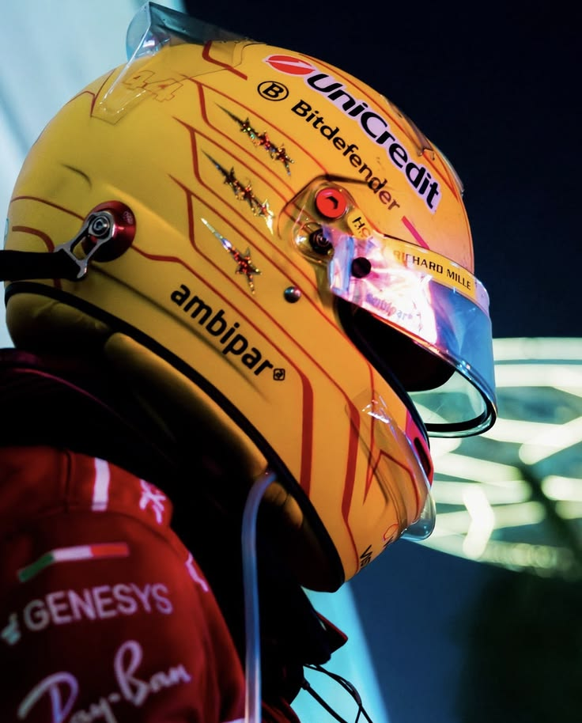
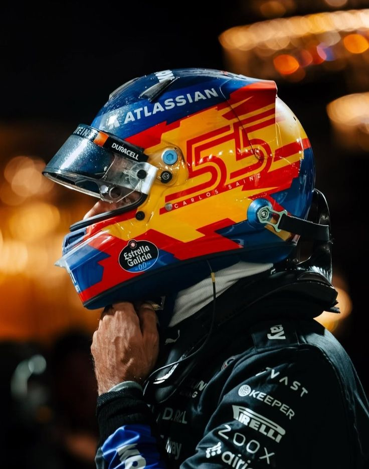
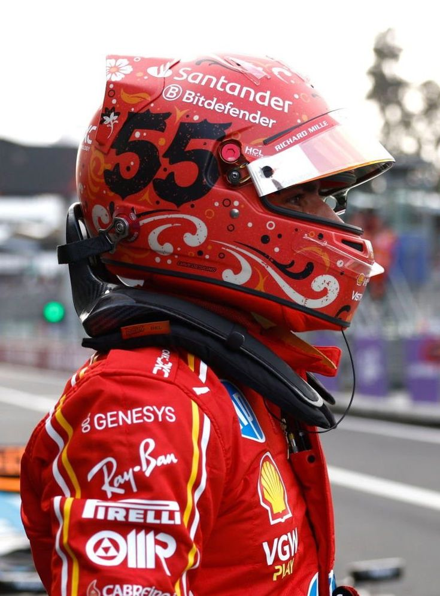
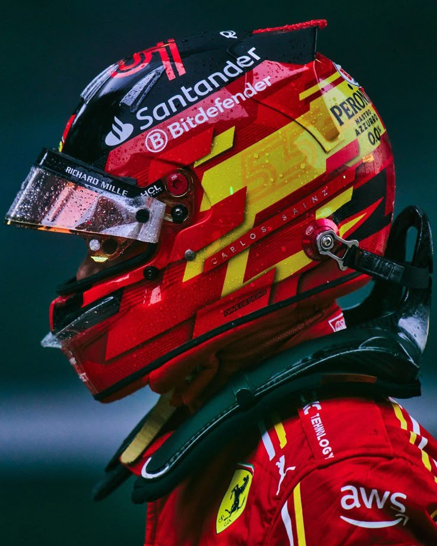
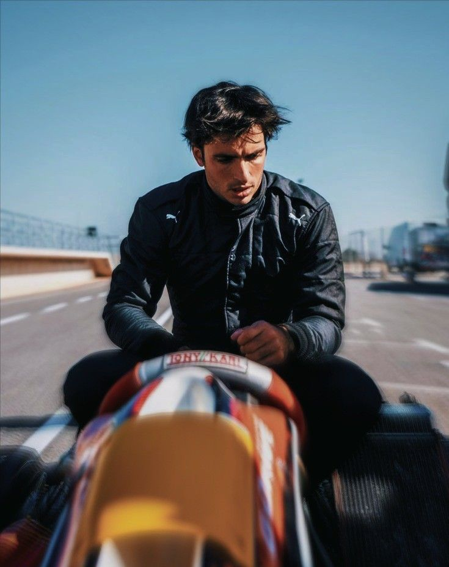

British Grand Prix
2022

Carlos Sainz Vázquez de Castro
Smooth Operator
1 September 1994, Madrid, Spain
Williams-Mercedes
His success in junior racing series earned him a place in the Red Bull Junior Team, a development program known for preparing drivers for Formula 1. This opportunity played a crucial role in his career, allowing him to refine his technical skills, gain valuable experience, and compete consistently at a higher level against some of the most promising talents in motorsport. During this period, Sainz proved his adaptability and determination, steadily building a strong foundation for his future in professional racing.
Through consistent performances and strong results, Sainz demonstrated his ability to compete among the best young drivers in the world. His dedication, discipline, and steady improvement eventually led to his promotion into Formula 1, marking the beginning of a new and challenging chapter in his career. Entering the pinnacle of motorsport, he faced intense competition and high expectations, but continued to develop his racecraft, strategic thinking, and resilience, establishing himself as a reliable and competitive driver on the grid.
Carlos Sainz debuted in Formula 1 with Toro Rosso in 2015, showing strong pace and consistency against more experienced drivers. This period helped him gain crucial experience and establish himself as a competitive driver.
At Renault, Sainz developed his technical skills and consistency, working closely with engineers. This stage shaped him into a more complete and adaptable driver.
Sainz became a key figure at McLaren, contributing to the team’s resurgence and achieving multiple podium finishes. He proved himself as a reliable and high-performing driver.
Joining Ferrari marked a major step in his career. He secured his first Formula 1 win and multiple podiums, confirming his place among the top drivers.
At Williams, Sainz brings experience and leadership, helping the team develop and improve performance while continuing to grow as a driver.







 boyfriend material aesthetics.jpeg)